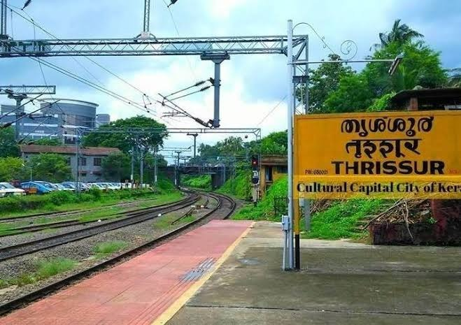

തൃശ്ശൂര് റെയിൽവേ സ്റ്റേഷൻ…
നീല യൂണിഫോമിട്ട രണ്ടു ചേച്ചിമാരോട് കൊക്കയിലേക്കുള്ള വഴി ചോദിച്ചു.
തൃശ്ശൂര് കൊക്കയോ?
മുഖത്തോടു മുഖം നോക്കി നിന്നിട്ട് രണ്ടാളും കൂടെ എന്നെ ആക്കിയ ഒരു ചിരി.
“മോനെവിട്ന്നാ?”
“എറണാകുളം.”
അവരെയും കുറ്റം പറഞ്ഞിട്ട് കാര്യമില്ല,
അവിടെങ്ങും ആത്മഹത്യ ചെയ്യാൻ സ്ഥലമില്ലാഞ്ഞിട്ടാണോ പ്പോ തൃശ്ശൂരെ കോക്കേം തിരക്കി വന്നത് എന്നു ചിന്തിച്ചുകാണും.
ദോ അവിടെ ഒന്നു ചോദിച്ചു നോക്ക്…
തൊട്ടപ്പുറെ ഇൻഫർമേഷൻ കൗണ്ടർ ചൂടിക്കാണിച്ചുകൊണ്ട് പറഞ്ഞു.
കൗണ്ടറിൽ സാമാന്യം നല്ല തിരക്കുണ്ട്.
ഇനീപ്പോ അതിന്റെ ഇടക്ക് കയറി നിന്ന് “ചേട്ടാ ഈ കൊക്കയിലേക്ക് എങ്ങനാ പൂവ്വാ” ന്നു ചോദിച്ചിട്ടുവേണം രണ്ടിനു പകരം പത്തു പതിനഞ്ചു ആക്കിയ ചിരികൾ കാണാൻ. ന്റ പൊന്നോ വേണ്ട.
ഫോണിലെ റീസെൻറ് കാൾ ലിസ്റ്റെടുത്ത് ദിവ്യചേച്ചിയെ വിളിച്ചു. പുള്ളിക്കാരി ആണ് പറഞ്ഞത് സ്റ്റാൻഡിൽ ഇറങ്ങിയിട്ട് കൊക്കയിലേക്ക് വന്നാമതീന്ന്.
“ഹലോ… ചേച്ചീ, ഞാനിപ്പോ തൃശ്ശൂര് സ്റ്റാന്റിൽ നിക്കുവാണേ. ഇവിടുന്നിപ്പോ എങ്ങടാ വരണ്ടേ??”
“കൊക്കയിലേക്ക് വാ. ഒരു അഞ്ചു മിനിറ്റ് നടപ്പേ ഉള്ളൂ.”
ശ്ശെടാ…!!!
ഇനീപ്പോ ഞാൻ കേട്ടതിന്റെ കുഴപ്പമാണോ
“ചേച്ചീ, ‘കൊക്കയിലേക്ക്’ അല്ലേ?”
“ഹാ അതേന്നെ. അവിടെ അടുത്താ. ആരോടെങ്കിലും ചോദിച്ചാ മതി.”
“ശെരീന്നാ.”
ഇൻഫർമേഷൻ കൗണ്ടർ. അന്വേഷണങ്ങൾ.
“ചേട്ടാ ഈ കൊക്ക എവിടെയാ?”
“കൊക്കയോ? സൂയിസൈഡ് പോയന്റ് വല്ലോം ആണോ”
കുറച്ചുമുന്നേ യൂണിഫോമിട്ട ചേച്ചിമാർ ചിരിച്ച അതേ ആക്കിയ ചിരി. ഇത്തവണ പക്ഷേ ഒരു എട്ടു പത്തു പേർ ഒരുമിച്ച്.
തിരിച്ചൊന്നും പറയാനോ കേൾക്കാനോ നിൽക്കാതെ അവിടുന്ന് നൈസായിട്ട് സ്കൂട്ടായി.. നമുക്ക് അഭിമാനം ആണല്ലോ വലുത്.
ഇതീപ്പൊ ന്താ ഇത്ര ചിരിക്കാൻ.
നിങ്ങള് എറണാകുളത്ത് വന്നിട്ട് പാതാളം എവിടാന്ന് ചോദിക്കുമ്പോ ഞങ്ങളാരും ഇങ്ങനെ കളിയാക്കി ചിരിക്കാറില്ലല്ലോ. ഹും.
Re-dial
“ഹലോ ചേച്ചീ, ഇത് പിന്നേം ഞാനാ.
അവിടുത്തെ അഡ്രസ്സ് ഒന്നു sms ചെയ്യോ pls…”
ഒന്നുരണ്ടു മിനിറ്റുകഴിഞ്ഞ് ഫോണിലെ നോട്ടിഫിക്കേഷൻ ടോൺ…
“പ്ലിംഗ്”
(അക്ഷരാർത്ഥത്തിൽ apt)
1st floor
Lakshmi Building
Kokkalai (കൊക്കാലൈ)
Thrissur.
ന്തൂട്ട് സ്ഥലങ്ങളാണെന്റിഷ്ടാ…
ഹോ !!!
-DeOn-